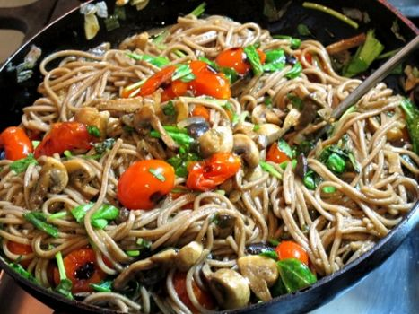
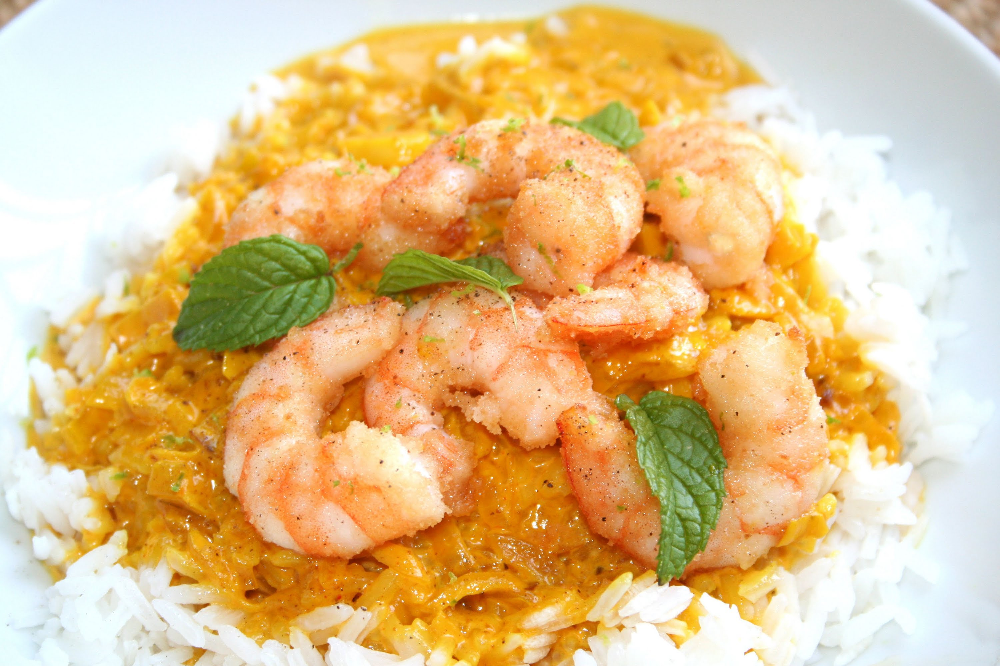

Salteado mediterráneo: con pasta, arroz o lo que quieras
21 de Noviembre de 2017
Esta receta queda espectacular con fideos (en la foto, son Soba, de harina sarraceno); pero también con arroz, o acompañando algún otro “principal”. También se pueden sumar más verduras y transformarlo casi en un estofado, pero recomiendo siempre mantener la línea de lo mediterráneo para que pegue.

Norman.Garza: Deliciosa comida, hemos hecho esta receta en casa y es espectacular, gracias Steven!!
Stepfania_W: Al preparar esta receta pude recordar muchas enseñanzas de mis padres y mi abuela, super cheveré...
Carlos.Cortez: Que delicia Steven, muero por probar un manjar organico...
Arroz con Langostinos
20 de Noviembre de 2017
Esta receta de arroz con langostinos es fácil y casera. Se puede preparar también con conchas y te damos alguna idea para darle tu toque personal. El secreto del plato es un guiso muy especial que preparamos con las cabezas de los langostinos
Gata_23: Esta es una de mis comidas favoritas, en la costa la preparamos a menudo por la abundancia de los recursos.
Julio32: Disfruto cuando en casa de mamá hacen mariscos, este es uno de mis platos favoritos...